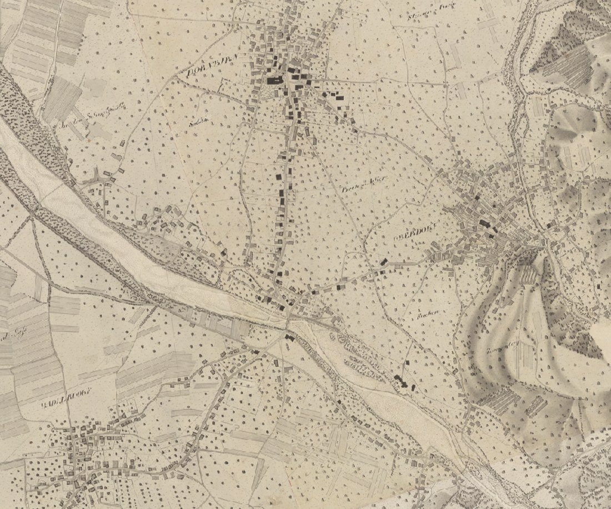
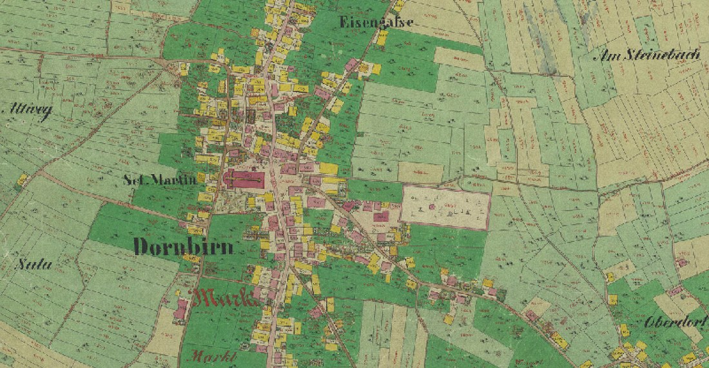
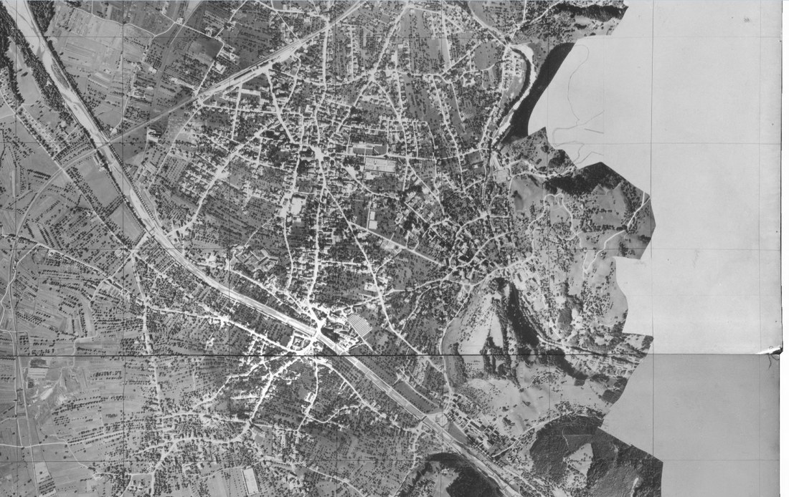
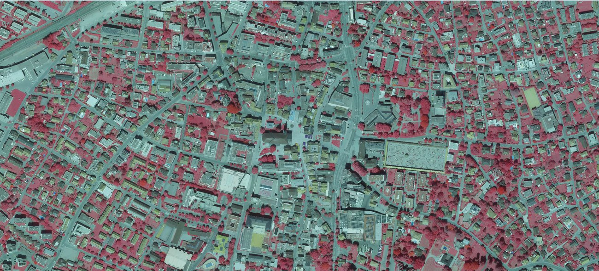
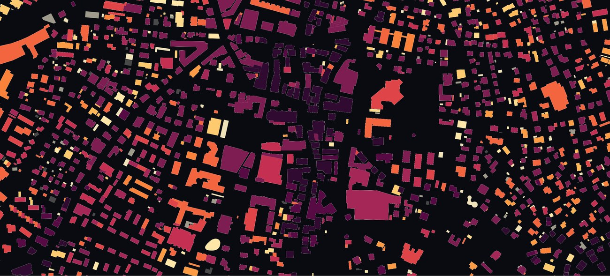
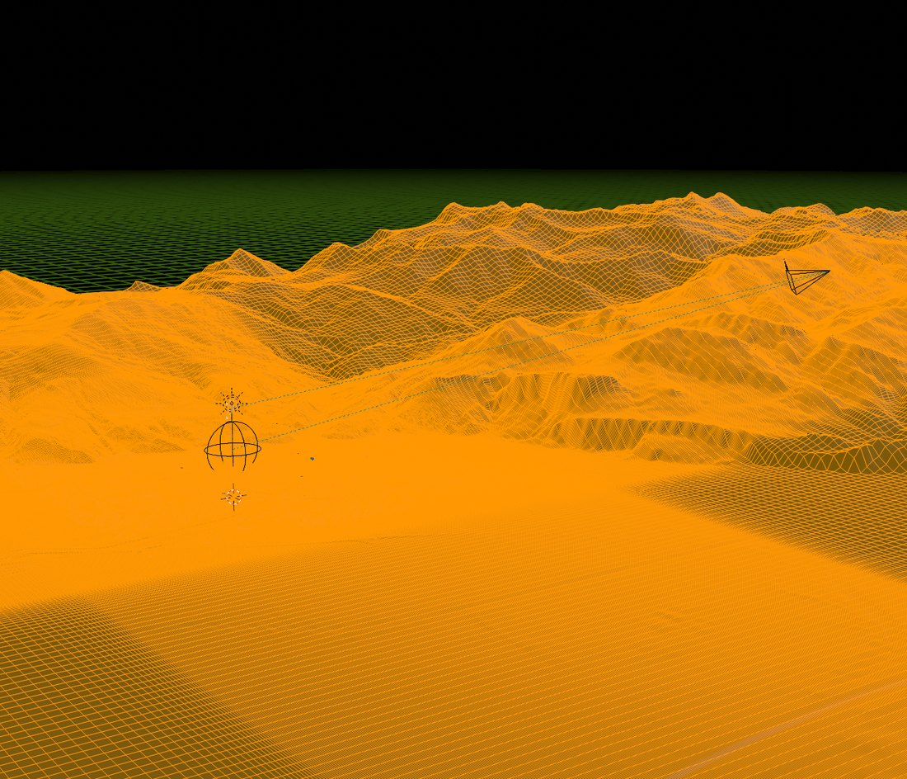

↩ Hintergrund zu: 125 Jahre, 125 Orte – Dornbirns Jubiläums-Rundgang ist live
Bei i.appear bauen wir die unterschiedlichsten Arten von Medien – und seit Kurzem auch interaktive Datenvisualisierungen, die als neues Feature direkt in unseren Stadtrundgängen stecken. Oft entstehen unsere Inhalte gemeinsam mit Schüler:innen innerhalb der Bildungsschiene i.grow. Heute zeigen wir, wie unsere bislang aufwendigste Datenvisualisierung entstanden ist: die Animation, die Dornbirns Siedlungswachstum über 200 Jahre sichtbar macht.
Dahinter steckt unsere Geoinformatikerin Maggy Haidacher – 3D-Artist und Datenanalystin in einem. Sie hat es sich in den Kopf gesetzt, die Siedlungsentwicklung von Dornbirn ausschliesslich aus öffentlich zugänglichen Geodaten zu rekonstruieren. Herausgekommen ist eine kleine Anwendung, die im Jubiläums-Rundgang „125 Jahre – 125 Bilder“ läuft und in der man Dornbirn beim Wachsen zusehen kann, Jahrzehnt für Jahrzehnt. In diesem Beitrag schauen wir hinter die Kulissen: von den Datenquellen über die Bilderkennung bis zur 3D-Berechnung.
Was sind eigentlich Geodaten?
Geodaten sind schlicht Daten mit räumlichem Bezug – also alles, was an einem Koordinatenpaar hängt: ein Gebäudegrundriss, eine Geländehöhe, der Verlauf eines Flusses. Das Schöne daran: In Österreich müssen viele dieser Daten aufgrund des Geodateninfrastrukturgesetzes (GeoDIG) öffentlich zur Verfügung gestellt werden. Für Vorarlberg bündelt das Land sie im Geoinformationssystem VOGIS. Das ist der Rohstoff, aus dem diese Visualisierung gemacht ist – frei verfügbar, für alle.
Die Herausforderung steckt nicht im Beschaffen, sondern im Zusammensetzen. Denn kein einziger Datensatz reicht 200 Jahre zurück. Wer die ganze Geschichte erzählen will, muss sie aus sehr unterschiedlichen Quellen zusammenstückeln.
200 Jahre Dornbirn aus 16 Quellen
Für die Animation hat Maggy 16 Zeitschnitte rekonstruiert – von der ältesten Handzeichnung bis zum hochauflösenden Luftbild von heute. Jeder Zeitschnitt hält fest, welche Gebäude zu diesem Zeitpunkt bereits standen. Die Quellen reichen von kolorierten Katasterkarten über Schwarz-Weiss-Luftbilder bis zu modernen Orthophotos mit Infrarotkanal:
16 Zeitschnitte, 16 Datenquellen
Jede Farbe steht für ein Baujahr in der Animation – von Dunkelviolett (alt) bis Cremegelb (neu):
| Jahr | Datenquelle | Methode |
|---|---|---|
| 1826 | Negrelli-Plan | Gebäude direkt von der Karte abgelesen |
| 1857 | Franziszeischer Kataster (Urmappe) | Gebäude direkt von der Karte abgelesen |
| 1930 | VOGIS S/W-Luftbild | Random-Forest-Klassifikation (Textur & Schatten) |
| 1950 | VOGIS S/W-Luftbild | Random Forest |
| 1960 | VOGIS S/W-Luftbild | Random Forest |
| 1970 | VOGIS S/W-Luftbild | Random Forest |
| 1980 | VOGIS Farb-Luftbild + Infrarot | NDVI (grösste Wachstumsphase) |
| 1990 | VOGIS Orthofoto + Infrarot | NDVI |
| 2001 | VOGIS Orthofoto + Infrarot | NDVI |
| 2009 | VOGIS Orthofoto + Infrarot | NDVI |
| 2012 | VOGIS Orthofoto + Infrarot | NDVI |
| 2015 | VOGIS Orthofoto + Infrarot | NDVI |
| 2018 | VOGIS Orthofoto + Infrarot | NDVI |
| 2020 | VOGIS Orthofoto + Infrarot (10 cm) | NDVI |
| 2022 | VOGIS Orthofoto + Infrarot (10 cm) | NDVI |
| 2025 | VOGIS Orthofoto + Infrarot (10 cm) + OSM | NDVI (heutiger Stand) |
Datengrundlage: VOGIS / Land Vorarlberg, Negrelli-Plan und Franziszeischer Kataster, OpenStreetMap.
Die beiden ältesten Quellen sind kleine Kunstwerke für sich. Der Negrelli-Plan aus dem Umfeld von 1826 ist eine fein lavierte Handzeichnung; der Franziszeische Kataster von 1857 – die sogenannte Urmappe – zeigt jedes Haus farbig eingetragen, Wohngebäude und Wirtschaftsgebäude sauber unterschieden. Hier liessen sich die Gebäude noch von Hand direkt aus der Karte ablesen. Ab den Luftbildern wurde das unmöglich: zu viele Häuser, zu viele Bilder.



Wie erkennt ein Computer ein Gebäude?
Bei 14.525 Gebäuden über sechzehn Zeitschnitte kommt man mit Abzeichnen nicht weit. Die bebaute Fläche muss also automatisch aus den Bildern herausgelesen werden – und genau hier wird es spannend, denn jede Bildart braucht ihre eigene Methode.
Bei den moderneren Aufnahmen hilft ein Trick aus der Fernerkundung, also der Auswertung von Satelliten- und Luftbildern: der NDVI, der Normalisierte Differenz-Vegetationsindex. Pflanzen reflektieren nahes Infrarotlicht sehr stark, schlucken aber rotes Licht. Stellt man beide Kanäle ins Verhältnis, leuchtet alles Grüne förmlich auf:
Was kein Grün ist, ist bebaute Fläche.
Auf einem Infrarot-Luftbild wird das sofort sichtbar: Wiesen, Gärten und Bäume erscheinen in kräftigem Rot, die versiegelten Flächen bleiben grau und blau. Der NDVI trennt also zuverlässig Grün von Nicht-Grün – und was übrig bleibt, ist die Stadt.

Bei den alten Schwarz-Weiss-Luftbildern fällt dieser Trick weg: Ohne Infrarotkanal gibt es keinen NDVI. Hier kommt ein lernendes Verfahren zum Einsatz, ein Random-Forest-Klassifikator. Vereinfacht gesagt lernt der Algorithmus an Beispielen, Gebäude an ihrer Textur und ihrem Schattenwurf zu erkennen – ähnlich wie das menschliche Auge ein Dach an seiner gleichmässigen Struktur und der scharfen Schattenkante ausmacht.
Diese Methoden sind kein Zufall, sondern Maggys Spezialgebiet. In ihrer Bachelorarbeit hat sie einen GIS-Algorithmus weiterentwickelt, der technischen Schnee – also Kunstschnee – anhand seiner Oberflächenstruktur automatisch von Naturschnee unterscheidet, ausgelesen aus Sentinel-2-Satellitendaten. Dieselbe Familie von Fernerkundungs-Verfahren, die Schneearten an ihrer Oberfläche trennt, lässt sich auch nutzen, um Hausdächer von Wiesen und Bäumen abzugrenzen.
Das Ergebnis sind saubere Gebäudeumrisse, jeder eingefärbt nach dem Jahr, in dem er zum ersten Mal auftaucht – vom dunklen Violett der ältesten Häuser bis zum hellen Gelb der jüngsten Neubauten:

Vom flachen Grundriss zum 3D-Modell
Bis hierher ist alles flach – Umrisse auf einer Karte. Für die 3D-Ansicht fehlt die Höhe. Auch die liefern die Geodaten, und zwar aus dem Laserscan. Aus der Luft wird das Gelände mit Laserpulsen vermessen; daraus entstehen zwei Modelle: das Digitale Oberflächenmodell (DOM) erfasst alles inklusive Gebäude und Bäume, das Digitale Geländemodell (DGM) nur den nackten Boden. Zieht man beide voneinander ab, bleibt genau die Höhe der Objekte übrig – und damit die Gebäudehöhe für jeden der 14.525 Grundrisse.
Das Geländemodell selbst liefert den Untergrund: den Talkessel von Dornbirn mit den umliegenden Berghängen. Ergänzt um das Gewässernetz – die Dornbirner Ach und die kleineren Bäche – entsteht so die Bühne, auf der die Stadt steht.
Die ganze Geodaten-Arbeit – das Verschneiden der Schichten, das Berechnen der Höhen, das Zuschneiden auf das Stadtgebiet – passiert in QGIS, einer freien Geoinformations-Software. Für die räumliche Darstellung geht es dann nach Blender: Dort wird zuerst das Geländemodell als Oberfläche aufgebaut, und auf diese Bühne wird jeder Gebäudegrundriss auf seine berechnete Höhe extrudiert.

Weil jedes Gebäude sein Erst-Baujahr mitbringt, lässt sich die Szene nun durch die Zeit laufen: Blendet man nur die Gebäude bis zu einem bestimmten Jahr ein, sieht man Dornbirn exakt so, wie es damals bebaut war. Reiht man diese Zeitschnitte aneinander, wächst die Stadt vor den Augen – vom kompakten Dorf entlang der Ach bis zur Stadt, die sich in den Talkessel ausbreitet.
… und dann ins Handy
Damit das nicht nur am Computer von Maggy läuft, wird aus den berechneten Daten am Ende eine kleine, schlanke Anwendung, die direkt im Handy funktioniert – eingebettet in den Stadtrundgang. Man wählt ein Jahr, drückt auf Play und sieht zu, wie sich die bebaute Fläche Jahrzehnt für Jahrzehnt ausbreitet. Hier ist sie zum Ausprobieren:
Diese Animation ist eine von drei Datenvisualisierungen, die im Jubiläums-Rundgang „125 Jahre – 125 Bilder“ stecken. Für uns ist sie zugleich der Auftakt zu einer eigenen Feature-Schiene: Datenvisualisierungen, die nach und nach auch in weitere Rundgänge einfliessen sollen. Denn wenn aus frei verfügbaren Geodaten plötzlich eine Stadt wird, die man wachsen sieht, dann wird Geschichte auf eine ganz neue Art begreifbar – genau das, wofür wir i.appear machen.
→ 125 Jahre, 125 Orte: der Jubiläums-Rundgang im Überblick
→ i.history – Zeitreisen durch die Stadt
→ Alle i.appear-Stadtrundgänge in Dornbirn